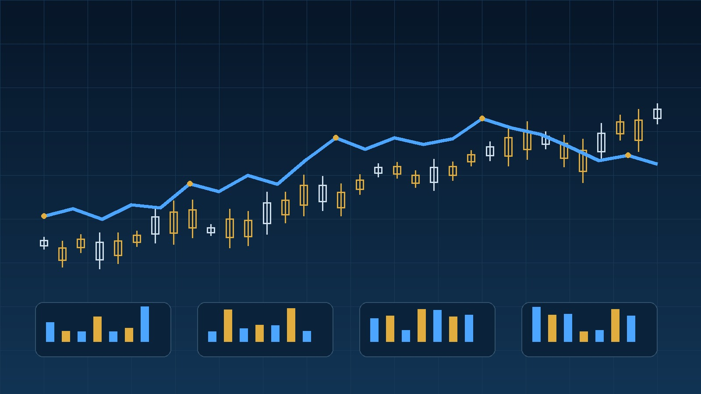

관심 분야와 투자 경험을 남겨주시면 상담 신청 내용을 확인할 수 있습니다.
상담문의 바로가기주식공부방법을 찾다 보면 재무제표, 차트, 경제 뉴스, 기업 분석 등 배워야 할 것이 끝없이 보입니다. 하지만 처음부터 모든 것을 동시에 공부하면 오히려 기준이 흐려질 수 있습니다. 가장 효율적인 방법은 기초 → 기업 → 시장 → 차트 → 복기처럼 순서를 정하고 각 단계에서 사용할 질문을 만드는 것입니다.
1. 주식공부방법의 출발점은 시장 구조입니다
주가가 왜 움직이는지를 이해하려면 먼저 거래가 어떻게 이루어지고 가격이 어떻게 형성되는지 알아야 합니다. 거래 시간, 호가, 주문 유형, 거래량 같은 기본 구조를 알고 있으면 차트나 뉴스에서 보이는 움직임을 해석하기 쉬워집니다.

2. 기업 분석은 재무 숫자와 사업을 함께 봅니다
재무제표 숫자만 보는 것보다 회사가 어떤 제품과 서비스로 돈을 버는지를 먼저 이해하세요. 매출이 늘었는데 이익이 줄었다면 비용이 늘었는지, 특정 사업의 수익성이 낮아졌는지 살펴보는 식으로 숫자와 사업을 연결합니다. 이렇게 보면 복잡한 지표를 외우지 않아도 기업의 변화를 읽기 쉬워집니다.

3. 뉴스와 거시경제는 기업에 미치는 영향으로 연결하세요
금리가 오른다는 뉴스 자체보다 해당 변화가 기업의 자금 조달 비용, 소비자의 구매력, 환율과 원자재 가격에 어떤 영향을 주는지 생각하는 것이 중요합니다. 미국 증시와 국내 증시가 동시에 움직이는 날에도 이유가 항상 같지는 않습니다. 시장을 공부할 때는 뉴스 제목보다 전달 경로를 보는 습관을 만들어보세요.

4. 차트는 정답이 아니라 관찰 도구로 사용합니다
이동평균선이나 거래량 같은 지표는 과거 가격 정보를 정리해 보여주는 도구입니다. 특정 패턴이 항상 같은 결과를 만든다고 생각하기보다 추세와 변동성, 거래량 변화가 현재 시장 참여자의 심리를 어떻게 보여주는지 관찰하는 방식이 좋습니다.
5. 투자 일지로 공부를 완성하세요
공부한 내용을 실제 판단과 연결하려면 기록이 필요합니다. 종목을 관심 목록에 넣은 이유, 예상한 긍정·부정 시나리오, 매수하지 않기로 한 이유까지 기록해도 좋습니다. 시간이 지나 결과와 비교하면 어떤 정보에 지나치게 반응했는지 확인할 수 있습니다. 입문 단계라면 주식초보 공부법을 먼저 확인하고, 영상 학습을 선호한다면 주식무료강의 추천 가이드를 함께 참고해보세요.
| 학습 단계 | 핵심 질문 |
|---|---|
| 기초 | 거래와 가격은 어떻게 형성되는가? |
| 기업 | 이 회사는 무엇으로 이익을 만드는가? |
| 시장 | 금리·환율 변화가 어디에 영향을 주는가? |
| 복기 | 내 판단에서 반복되는 실수는 무엇인가? |
관심 분야와 투자 경험을 남겨주시면 상담 신청 내용을 확인할 수 있습니다.
상담문의 바로가기관련 투자 콘텐츠
주식공부방법 자주 묻는 질문 8가지
주식공부방법은 무엇부터 시작해야 하나요?
시장 구조와 주문 방식, 손실 관리 같은 기초를 먼저 익힌 뒤 기업 분석, 산업 분석, 차트와 뉴스 해석 순으로 넓혀가는 방법이 좋습니다.
재무제표는 어디까지 공부해야 하나요?
초보 단계에서는 매출, 영업이익, 순이익, 부채, 현금흐름처럼 기업의 상태를 이해하는 핵심 항목부터 익혀도 충분합니다.
차트 공부에 얼마나 시간을 써야 하나요?
차트는 가격 흐름을 이해하는 도구이므로 기업과 시장 분석을 대신하지 않도록 전체 공부 시간의 일부로 배분하는 것이 좋습니다.
경제 뉴스는 어떻게 공부해야 하나요?
뉴스 내용을 그대로 외우기보다 금리, 환율, 원자재, 산업 정책이 어떤 기업의 비용과 매출에 영향을 주는지 연결해서 보는 습관이 중요합니다.
투자 일지는 왜 필요한가요?
매수 이유와 예상 시나리오, 결과를 기록하면 자신의 반복되는 실수와 강점을 파악하기 쉬워집니다.
주식공부를 해도 손실이 날 수 있나요?
가능합니다. 공부는 손실을 완전히 없애는 방법이 아니라 불확실성을 이해하고 위험을 관리하며 판단의 질을 높이는 과정에 가깝습니다.
모의투자는 도움이 되나요?
주문 방식과 계획을 연습하는 데 도움이 될 수 있습니다. 다만 실제 자금이 들어갔을 때의 심리적 압박은 다르다는 점을 함께 고려해야 합니다.
공부 방향이 계속 바뀌는데 어떻게 해야 하나요?
기초, 기업, 시장, 차트, 복기의 순서를 일정 기간 유지한 뒤 부족한 부분을 보완하는 방식이 좋습니다. 필요하면 상담을 통해 현재 단계와 목표를 정리할 수 있습니다.
관심 분야와 투자 경험을 남겨주시면 상담 신청 내용을 확인할 수 있습니다.
상담문의 바로가기